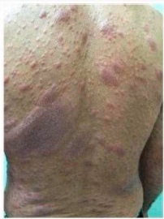
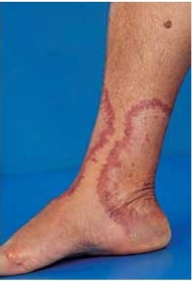
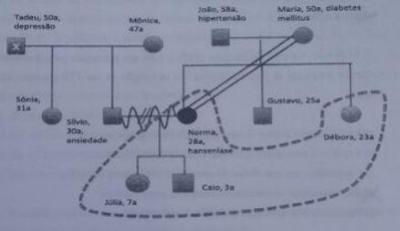
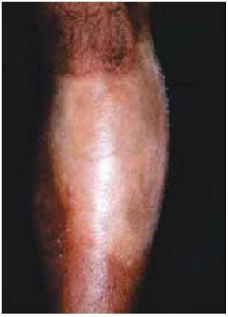
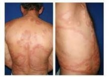

Questão 1 · Reação do tipo 1 · Dermatologia · 4000182155Homem, 40 anos, em tratamento de hanseníase dimorfa com poliquimioterapia multibacilar (PQT MB) há 2 meses, apresenta edema e aumento das lesões de pele, além de aparecimento de lesões ao redor das lesões prévias há 15 dias. Em associação, relata dor intensa na região de fossa cubital direita e piora do formigamento na mão ipsilateral. Não apresenta outras patologias ou alterações ao exame físico. Qual a conduta mais adequada?
A Ultrassonografia de nervos e substituição para PQT alternativa.
B Eletroneuromiografia e suspensão da PQT MB.
C Talidomida e substituição para PQT alternativa.
D Corticoterapia e manutenção da PQT MB.
Questão 2 · Dermatologia · Reação do tipo 2 · 4000181391Em seu turno de demanda espontânea na sua UBS, você atende Cleodécio, de 54 anos, que refere estar fazendo uma consulta de retorno. Ele relata que “o pé esquerdo está morto, o olho esquerdo está muito seco e há manchas na pele” e traz o resultado de um exame de baciloscopia de raspado intradérmico para pesquisa de BAAR que foi solicitado por outro médico. O resultado do exame é negativo. Em seu exame físico, apresenta face in ltrada e madarose. Há oito lesões papulares escuras, endurecidas, não dolorosas e não pruriginosas em tórax, dorso e membros inferiores. Em membro inferior esquerdo, você observa espessamento do nervo bular comum. O exame dermatoneurológico mostra alteração de sensibilidade em face, região medial do antebraço à direita, região lateral da perna esquerda e dorso de pé esquerdo. A avaliação de funções motoras evidencia garra ulnar à direita e perda da dorsiflexão de pé esquerdo. Próximo de concluir a PQT-U iniciada, Cleodécio procura novo atendimento. Ele relata início súbito de febre, artralgia múltipla, queda de estado geral, nódulos e placas eritematosos difusos dolorosos. Ele refere também episódios de “sensação de dor em choque nos nervos”, parestesia difusa e piora aguda de função motora. Em breve revisão de prontuário, está registrado que Cleodécio não possui comorbidades cardiovasculares, nem endócrino-metabólicas. Qual é a principal hipótese diagnóstica e qual conduta terapêutica?
A Reação hansênica tipo 1. Não iniciar tratamento medicamentoso, mas encaminhar para centro de referência.
B Reação hansênica tipo 2. Iniciar tratamento medicamentoso com metilprednisolona EV e encaminhar para centro de referência.
C Reação hansênica tipo 1. Iniciar profilaxia para estrongilodíase, iniciar Prednisona 1mg/kg/dia, iniciar Amitriptilina 25mg/dia e aumento gradativo, se persistência de sintomas neurológicos. Encaminhar para centro de referência.
D Reação hansênica tipo 2. Iniciar profilaxia para estrongilodíase, iniciar Prednisona 1mg/kg/dia, iniciar Amitriptilina 25mg/dia, com aumento gradativo, se persistência de sintomas neurológicos. Encaminhar para centro de referência.
Questão 3 · Classif icação · Dermatologia · Tratamento · 4000181390Em seu turno de demanda espontânea na sua UBS, você atende Cleodécio, de 54 anos, que refere estar fazendo uma consulta de retorno. Ele relata que “o pé esquerdo está morto, o olho esquerdo está muito seco e há manchas na pele” e traz o resultado de um exame de baciloscopia de raspado intradérmico para pesquisa de BAAR que foi solicitado por outro médico. O resultado do exame é negativo. Em seu exame físico, apresenta face in ltrada e madarose. Há oito lesões papulares escuras, endurecidas, não dolorosas e não pruriginosas em tórax, dorso e membros inferiores. Em membro inferior esquerdo, você observa espessamento do nervo bular comum. O exame dermatoneurológico mostra alteração de sensibilidade em face, região medial do antebraço à direita, região lateral da perna esquerda e dorso de pé esquerdo. A avaliação de funções motoras evidencia garra ulnar à direita e perda da dorsiflexão de pé esquerdo. Para ns de conduta terapêutica, qual classificação funcional da Hanseníase de Cleodécio e por quanto tempo a Poliquimioterapia Única (PQT-U) deve ser adotada?
A Multibacilar, pois há mais de cinco lesões de pele. O esquema terapêutico deve ser mantido por seis meses, tendo em vista a baciloscopia negativa.
B Multibacilar, pois há mais de cinco lesões de pele. O esquema terapêutico deve ser mantido por doze meses, tendo em vista a classificação funcional.
C Paucibacilar, pois a baciloscopia está negativa. O esquema terapêutico deve ser mantido por seis meses, tendo em vista a classificação funcional.
D O esquema terapêutico deve ser mantido por doze meses, pois o paciente apresenta acometimento neural.
Questão 4 · Reação do tipo 1 · 4000177569Paciente masculino, 42 anos, natural e procedente de Natal, morador da Zona Norte, vigilante, casado. Vem à consulta e informa surgimento, há 2 anos, de manchas hipocrômicas assintomáticas no abdome que, paulatinamente, atingiram o dorso, os braços e as pernas. Há um ano, refere presença de lesões eritemato-edematosas in ltradas, com bordas internas bem definidas, mas as externas pouco definidas; e agora acometem também a face. Elas têm dimensões distintas, variando de poucos centímetros a lesões muito grandes. Esporadicamente, elas tornam-se mais evidentes, vermelhas, edematosas e “quentes”. Nesses episódios agudos, associam- se a artralgias, febre medida, inapetência e cansaço físico. Na última piora, há um mês, surgiu também uma dor intensa no cotovelo esquerdo, que, ao ser apalpado, evidenciou o nervo ulnar espessado e doloroso. Além disso, notou-se perda da sensibilidade e força nos 4º e 5º dedos da mão esquerda. Nega casos semelhantes na família e nunca residiu em outro estado. Devido ao seu trabalho, por 5 anos, passou temporadas em Mossoró, há mais de 3 anos. Informa que, no último ano, fez uso de vários tratamentos orais e tópicos, entre antifúngicos, anti-inflamatórios não hormonais, analgésicos, corticoides e antihistamínicos, com melhoras parciais, mas sempre há retorno e, agora, houve agravamento do quadro clínico. Nesse caso, o diagnóstico clínico mais provável é
A hanseníase indeterminada com neurite.
B hanseníase dimorfa com reação tipo 1 e neurite.
C hanseníase virchowiana com reação tipo 1 e neurite.
D hanseníase dimorfa com reação tipo 2 e neurite.
Questão 5 · Hanseníase tuberculoide · 4000166447Paciente do sexo masculino, proveniente de Caapiranga, apresenta, há quase 2 anos, mais de vinte placas eritematosas com tamanhos que variam de 3 a 15 cm de diâmetro, com algumas lesões satélites menores periféricas, localizadas em tronco e membros. Aos testes de sensibilidades térmica e dolorosa há diminuição da sensibilidade e na palpação de nervos periféricos evidenciou-se espessamento de nervo ulnar direito e ambos os nervos tibiais posteriores. Baciloscopia de pele negativa. Qual o provável diagnóstico clínico?
A Hanseniase borderline borderline
B Hanseniase borderline tuberculóide
C Hanseniase borderline lepromatosa
D Hanseníase indeterminada
Questão 6 · Reação do tipo 1 · Reação do tipo 2 · 4000166404No Estado Reacional da Hanseníase, a reação:
A tipo 2 ocorre em pacientes portadores da forma virchowiana e dimorfos virchowiano.
B tipo 1 ocorre na fase inicial da doença na forma indeterminada.
C tipo 1 ocorre em pacientes que não possuem nenhum grau de imunidade celular.
D tipo 2 caracteriza-se pela exacerbação das lesões preexistentes.
Questão 7 · Apresentação clínica · 4000166403Relacione as colunas, associando as formas clínicas da Hanseníase às suas respectivas lesões. COLUNA I 1. Hanseníase indeterminada. 2. Hanseníase tuberculoide. 3. Hanseníase borderline borderlaine. 4. Hanseníase virchoviana. COLUNA II ( ) Lesões em placas ou anulares com bordas papulosas, eritematosas ou hipocrômicas. ( ) Máculas hipocrômicas com diminuição da sudorese e alteração da sensibilidade. ( ) Pápulas, nódulos e infiltrações difusas com distribuição simétrica. ( ) Placas e lesões foveolares com distribuição assimétrica. A sequência correta de associação da coluna II é:
A 1, 2, 3, 4.
B 2, 1, 4, 3.
C 2, 3, 4, 1.
D 4, 3, 1, 2.
Questão 8 · Classif icação · Tratamento · 4000164225Paciente de 35 anos, procura a Unidade de Saúde da Família com queixa de uma mancha esbranquiçada na perna direita. O paciente nega dores, prurido ou outras queixas em relação à mancha, que percebeu há cerca de 2 anos e vem aumentando de tamanho, lentamente. Nega perda de força ou parestesias no membro afetado. Paciente nega tabagismo, uso de bebida alcoólica, de medicamentos ou de qualquer problema de saúde. Ao exame, o médico de família e comunidade (MFC) percebe a mancha hipocrômica, de cerca de 6 cm de diâmetro, com perda de sensibilidade tátil, térmica e dolorosa. Também percebeu o nervo bular à direita mais espessado. Não encontrou outras alterações de pele ou outros nervos espessados. Com esses achados, a melhor conduta do MFC é:
A Iniciar tratamento com rifampicina, clofazimina e dapsona, com duração de 6 meses.
B Iniciar tratamento com rifampicina e clofazimina, com duração de 12 meses.
C Encaminhar o paciente para confirmação diagnóstica em ambulatório especializado.
D Iniciar tratamento com rifampicina e dapsona, com duração de 6 meses.
Questão 9 · Hanseníase dimorf a · Hanseníase indeterminada · Hanseníase virchowiana · 4000145873No que se refere aos aspectos clínicos da hanseníase, assinale a alternativa correta.
A A hanseníase indeterminada é uma manifestação paucibacilar e todos os pacientes passam por essa fase no início da doença. Por ser um estágio inicial da doença, apresenta mácula esbranquiçada geralmente única na pele, sem alteração de sensibilidade ou sudorese.
B A hanseníase tuberculoide manifesta-se clinicamente por poucas lesões infiltradas, com alteração de sensibilidade nas bordas das lesões, o que indica a atividade imunológica periférica contra o bacilo.
C A hanseníase dimorfa é uma manifestação intermediária entre a tuberculoide e a virchowiana, podendo ser classificada como pauci ou multibacilar, conforme o número de lesões apresentadas.
D A hanseníase virchowiana é a forma mais contagiosa da doença. O paciente acometido por essa forma geralmente na
E A hanseníase virchowiana apresenta baixa resposta imunológica contra o bacilo, o que explica a ausência de acometimento nervoso e a presença de bacilos nas amostras de baciloscopia e no exame histopatológico.
Questão 10 · Estados reacionais · 4000145872Quanto às reações hansênicas, assinale a alternativa incorreta.
A As reac
B A reação hansênica do tipo 1 é geralmente tratada com corticoterapia, enquanto a reação hansênica do tipo 2 é geralmente tratada com talidomida, podendo ser associada a corticoterapia em casos selecionados.
C E
D O uso prolongado da talidomida pode levar a neuropatias perife
E Devido aos graves efeitos teratoge
Questão 11 · Exame dermatoneurológico · Classif icação · Apresentação clínica · 4000145870A respeito do diagnóstico da hanseníase, assinale a alternativa correta.
A O exame clínico e os testes propedêuticos não são suficientes para basear o diagnóstico da moléstia, sendo necessários, na maioria dos casos, exames complementares, como, por exemplo, a baciloscopia ou a biópsia de pele.
B No paciente paucibacilar (hanseni
C A prova de histamina exo
D A hanseníase acomete principalmente a pele e o sistema nervoso periférico. Assim, o exame dermatoneurológico apresenta alteração intensa nos quadros de hanseníase multibacilar, porém preservado nos quadros de hanseníase paucibacilar.
E O doente deve ser classificado em paucibacilar, em que a doença está localizada em uma regia
Questão 12 · Reação do tipo 1 · 4000144252Homem, 52 anos, em tratamento para hanseníase (poliquimioterapia multibacilar) há 2 meses. Buscou atendimento queixando se de que há 5 dias houve piora aguda das lesões cutâneas pré existentes (foto), perda de sensibilidade em 4° e 5° quirodáctilos da mão direita e dor em choque irradiando do cotovelo até a mão direita. Qual a conduta terapêutica imediata mais adequada para este caso?

A Iniciar talidomida via oral.
B Suspender a poliquimioterapia multibacilar.
C Iniciar prednisona via oral.
D Instaurar poliquimioterapia substitutiva.
Questão 13 · Diagnóstico · Classif icação · 4000143396Elton, 33 anos, morador de Rondon do Pará, compareceu à unidade básica de saúde, com relato de que sua irmã havia sido diagnosticada com hanseníase, já tendo iniciado seu tratamento com cartelas de PQT- MB. Relata que seu avô também teve hanseníase. Sua maior preocupação é que ouviu falar que hanseníase pode atingir nervos, segundo leu na internet, mesmo sem manchas. Refere que apresenta um quadro de dor nos dois pés e braço D e E, mas não consegue ver manchas. O médico da família fez o exame dermatoneurológico com a ajuda da enfermagem. Observou-se espessamento e dor no trajeto do tibial bilateralmente e no ulnar D e E não observou manchas, porém há presença de área anestésica no braço D e região do calcâneo. Solicitou baciloscopia de linfa, que resultou negativa. O médico concluiu diagnóstico de hanseníase neural primária com neurite e iniciou tratamento com esquema PQT-MB e prednisona 40 mg/dia agendando o retorno para 15 dias. Sobre a conduta médica:
A Conduta incorreta. Não há elementos clínicos e laboratoriais que suportem essa decisão.
B Conduta incorreta. Embora seja provável o diagnóstico de hanseníase neural primária, deve ser tratado com esquema PQT- PB pois a baciloscopia é negativa.
C Conduta incorreta. O paciente realmente é suspeito de hanseníase neural primária porém deve ser encaminhado através de TFD a uma unidade de referência para realização de RT-PCR e eletroneuromiografia.
D Conduta correta. Há elementos clínicos, epidemiológicos suficientes para o diagnóstico de hanseníase neural primária e para inicio do tratamento. Não há necessidade de aguardar TFD.
E Conduta incorreta. Deve-se investigar outras patologias neurológicas periféricas.
Questão 14 · Avaliação dos troncos nervosos · 4000134707O médico deve ter uma atitude de vigilância em relação ao potencial incapacitante da hanseníase. Por este motivo é muito importante que a avaliação neurológica destes pacientes seja feita com frequência, para que possam, precocemente, serem tomadas as medidas adequadas de prevenção e tratamento de incapacidades físicas. Assim sendo, no momento do diagnóstico, os períodos corretos destas avaliações são:
A Semestralmente e na alta do paciente.
B Trimestralmente e na alta do paciente.
C Trimestralmente, na alta do paciente, e na ocorrência de neurites e reações, ou quando suspeitar delas.
D Semestralmente, na alta do paciente, na ocorrência de neurites e reações ou quando suspeitar das mesmas, durante ou após o tratamento PQT (poliquimioterapia) e sempre que houver queixas.
E Trimestralmente, na alta do paciente, na ocorrência de neurites e reações ou quando suspeitar das mesmas, durante o tratamento PQT.
Questão 15 · Reação do tipo 1 · 4000131056Paciente de 40 anos de idade, apresentava ao diagnóstico, discretas lesões localizados no tronco, em placa, indolores, de centro claro e com bordas eritematosas. A baciloscopia do raspado intradérmico das lesões foi positiva (1+/4+). Foi instituído tratamento específico padrão para o quadro. No terceiro mês de tratamento o paciente retorna referindo piora das lesões há uma semana. A complicação apresentada e seu respectivo tratamento são:
A Reação hansênica tipo I, mediada pela deposição de complexos antigeno-anticorpo nas lesões pré existentes e corticoterapia sistêmica.
B Reação hansênica tipo Il, mediada pela deposição de complexos antígeno-anticorpo nas lesões pré existentes e talidomida sistêmica.
C Reação hansênica tipo Il, mediada pela ativação da imunidade celular e liberação de citocinas que favorecem inflamação de lesões pré-existentes e clofazimina.
D Reação hansênica tipo |, mediada pela ativação da imunidade celular e liberação de citocinas que favorecem a inflamação de lesões pré-existentes e dobrar a dose da poliquimioterapia.
E Síndrome de hipersensibilidade com eosinofilia e sintomas sistêmicos induzida por droga (DRESS) e ciclosporina.
Questão 16 · Reação do tipo 2 · 4000127327Homem de 48 anos iniciou, há 20 dias, uso de poliquimioterapia (PQT) multibacilar, incluindo dapsona, clofazimina e rifampicina, para tratamento de hanseníase forma dimorfa virchowiana. Há 2 dias, passou a apresentar febre baixa, astenia, dor ocular bilateral, mialgia e lesões cutâneas dolorosas. Nega perda de força muscular. Ao exame, apresentava-se febril, normocorado, anictérico, acianótico e exame dermatológico revelava nódulos eritematosos em membros. Diante do provável diagnóstico do quadro mais recente apresentado pelo paciente, qual a conduta mais recomendada neste momento?
A Manter PQT e iniciar talidomida oral.
B Manter PQT e iniciar prednisona 1mg/kg.
C Suspender dapsona e substituir por ofloxacina.
D Suspender dapsona e iniciar azul de metileno venoso. ida oib pr ed
Questão 17 · Hanseníase tuberculoide · 4000120593Homem de 35 anos apresenta, há 3 anos, uma única lesão no terço inferior da perna esquerda caracterizada por placa com centro hipocrômico, anestésica e bordas moderada- mente elevadas (imagem a seguir). Baciloscopia: negativa; exame anatomopatológico: in ltrado inflamatório granulo-matoso perineural e perianexial, com pesquisa de BAAR negativa; reação de Mitsuda: positiva. É correto afirmar que

A não há evidências para diagnóstico de hanseníase, pois a baciloscopia foi negativa.
B se trata de hanseníase indeterminada, pois apresenta uma única lesão cutânea.
C o diagnóstico é de hanseníase tuberculoide, mesmo sem o achado do bacilo.
D o diagnóstico é de hanseníase dimorfa, pois a reação de Mitsuda foi positiva.
Questão 18 · Tratamento · 4000118954A hanseníase é uma doença infectocontagiosa transmitida principalmente pelas vias áreas superiores, tem cura e pode ser classificada como paucibacilar ou multibacilar. A partir de 12/12/2018, quais são as drogas utilizadas para o tratamento da hanseníase em adultos de acordo com o Ministério da Saúde?
A Rifampicina e dapsona para hanseníase paucibacilar e rifampicina, dapsona e clofazimina para hanseníase multibacilar
B Rifampicina e dapsona para hanseníase multibacilar e rifampicina, dapsona e clofazimina para hanseníase paucibacilar
C Rifampicina e clofazimina para hanseníase paucibacilar e rifampicina, dapsona e clofazimina para hanseníase multibacilar
D Rifampicina, dapsona e clofazimina para hanseníase paucibacilar e para hanseníase multibacilar
Questão 19 · Hanseníase · 4000118225Em relação à Hanseníase é correto afirmar:
A A classificação da hanseníase em Pauci ou Multibacilar não tem influência no esquema terapêutico, sendo o mesmo para as duas formas.
B Não é recomendada a suspensão do tratamento, mesmo na presença de qualquer efeito colateral causado pelos medicamentos.
C A detecção ativa de casos acontece na Unidade de Saúde durante as atividades gerais de atendimento à população.
D A baciloscopia é o exame microscópico onde se observa o Mycobacterium leprae. Quando negativa afasta-se o diagnóstico da hanseníase.
E Considera-se como contato intradomiciliar toda e qualquer pessoa que resida ou tenha residido com o doente, nos últimos cinco anos.
Questão 20 · Exame dermatoneurológico · Diagnóstico · Apresentação clínica · 4000114523Mulher, 56 anos, sem comorbidades e em uso de vitaminas para formigamento em mãos e pés, apresentou as lesões de pele há 7 meses (figura). Qual é a conduta diagnóstica mais adequada?

A Biópsia de pele.
B Eletroneuromiografia.
C Estesiometria.
D Micológico direto.
Questão 21 · Hanseníase tuberculoide · 4000109548Homem de 36 anos de idade apresenta há 9 meses placa eritêmato-in ltrada, com borda elevada, ovalada, de 6 cm, anestésica, no braço esquerdo. O exame histopatológico da lesão mostrou dermatite granulomatosa não-caseosa, com células gigantes tipo Langhans e in ltrado linfo-plasmocitário perivascular, perianexial e ao redor de letes nervosos, pesquisa de BAAR negativa. O teste de Mitsuda foi positivo. Qual o diagnóstico?
A Hanseníase indeterminada.
B Hanseníase wirchowiana.
C Micobacteriose atípica.
D Hanseníase tuberculoide.
Questão 22 · Avaliação e conduta dos contatos · 4000076428Ao diagnosticar um paciente com hanseníase, assinale a alternativa que contempla medidas de vigilância epidemiológica para este caso.
A Isolamento do paciente.
B Administração de BCG aos comunicantes próximos.
C Início imediato e permanente da dapsona.
D Administração de talidomida para prevenir as reações.
E Não são necessárias medidas de vigilância epidemiológica.
Questão 23 · Hanseníase virchowiana · Fenômeno de Lúcio · 4000075187Mulher, 42 anos, com diagnóstico de hanseníase, apresenta lesões ulceradas em membros inferiores. Biopsia das lesões: necrose isquêmica de epiderme e derme super cial, proliferação endotelial e trombose de vasos profundos da derme. A complicação descrita e a forma de hanseníase associada são respectivamente:
A fenômeno de Lúcio /forma tuberculoide
B fenômeno de Lúcio / forma lepromatosa
C reação tipo 2 / forma lepromatosa
D reação tipo 2 / forma tuberculoide
Questão 24 · Classif icação · Estados reacionais · Apresentação clínica · 4000046547Joana, 33 anos procurou o médico da família, assustada, pois sua irmã havia sido diagnosticada com hanseníase, apresentando várias manchas no corpo e queimadura nas mãos por não sentir a quentura na panela ao cozinhar. Embora não more com a irmã há 8 anos, refere que apresenta manchas no corpo, e dor intensa no braço esquerdo, há três semanas. O médico procurou tranquilizá-la e ao exame físico observou a presença de três lesões em placa, de aspecto foveolar, com cerca de 8 cm em coxas. No braço esquerdo, observou lesão em placa eritematoviolácea, muito edemaciada, com cerca de 6 cm na região do cotovelo, e choque e dor à palpação do ulnar no braço esquerdo. No abdome e dorso, observou três lesões maculares eritematosas e uma lesão eritematosa em placa. Alteração de sensibilidade térmica e dolorosa evidentes nas lesões. Diante do quadro, o médico da família deve:
A classificar a paciente como hanseníase Multibacilar e aguardar baciloscopia e histopatológico para iniciar tratamento PQT.
B suspeitar de hanseníase e aguardar baciloscopia pra classificar e iniciar o tratamento com PQT.
C classificar como hanseníase Multibacilar em reação tipo II, eritema nodoso. Iniciar PQT e prednisona, devido à idade fértil.
D classificar como hanseníase multibacilar com reação tipo I e neurite e iniciar PQT-MB e Prednisona.
E classificar como hanseníase paucibacilar com reação tipo I com neurite. Iniciar prednisona e aguardar baciloscopia para iniciar PQT.
Questão 25 · Reação do tipo 2 · 4000031114Paciente 62 anos, em tratamento para hanseníase virchoviana há 6 meses, comparece referindo aparecimento súbito de nódulos eritemato-dolorosos e disseminados em todo o corpo com febre, calafrios associados a quadro de edema e dor em saco escrotal com hiperemia conjuntival e dor retro-ocular intensa bilateral. Nesse caso, a melhor conduta é:
A Iniciar corticoterapia e encaminhar ao oftalmologista e urologista.
B Iniciar talidomida e encaminhar para urologista e oftalmologista.
C Suspender esquema de tratamento específico para hanseníase e investigar intolerância medicamentosa.
D Iniciar talidomida e prednisona concomitantemente pois trata-se de eritema nodoso associado à orquite e iridociclite.
E Iniciar esquema substitutivo imediatamente devido a provável quadro de intolerância à dapsona.
Questão 26 · Tratamento · 4000031052Paciente gestante com 12 semanas, encontra-se no segundo mês de tratamento para Tuberculose pulmonar e refere que há 1 ano observou lesão única tipo mácula em membro superior direito de crescimento progressivo e perda da sensibilidade térmica e dolorosa. Nessa última semana, buscou auxílio médico em serviço de hansenologia recebendo diagnóstico de Hanseníase Tuberculoide. Sobre esse caso, é correto afirmar:
A A paciente deve iniciar o tratamento específico para hanseníase pós-parto e o aleitamento materno está proscrito nesse caso.
B a paciente deve iniciar esquema alternativo para tratamento da hanseníase devido à gravidez.
C a paciente deve iniciar tratamento da hanseníase após concluir o esquema específico para tuberculose.
D considerando que a forma tuberculoide da hanseníase não é transmissível, a paciente deve iniciar o tratamento apenas no pós-parto devido a riscos para o feto.
E a paciente deve iniciar tratamento específico para hanseníase com esquema padrão concomitantemente ao tratamento da tuberculose pulmonar independentemente da idade gestacional.
Questão 27 · Reação do tipo 2 · Tratamento · 4000026336M.G.S.S., de 25 anos, solteira, cabeleireira, nega uso de medicamentos de forma contínua. Queixa-se de início de febre há três dias. Fez uso de dipirona. Há dois dias, surgiram nódulos eritematosos dolorosos em membros superiores e membros inferiores. Procurou atendimento médico e, ao exame dermatológico, apresentava, além dos nódulos, máculas eritematosas mal definidas, algumas de centro poupado, disseminadas. A paciente informava ter esses sintomas há alguns meses e que usou apenas medicamentos tópicos para micose, por conta própria. No momento da consulta, foi feito o teste de sensibilidade térmica, tátil e dolorosa, que estavam todos alterados. Diante do quadro, o tratamento a ser realizado será:
A suspensão da dipirona e uso de Prednisona 0,5 mg/kg/dia.
B Itraconazol oral, 100 mg, ao dia, por 14 dias.
C Prednisona 1 mg/kg/dia associada à PQT/MB.
D Rifampicina, isoniazida e talidomida, 100 mg/dia.
Questão 28 · Classif icação · Vigilância epidemiológica · 4000015147Com base nas diretrizes para vigilância, atenção e eliminação da hanseníase como problema de saúde pública no Brasil (Ministério da Saúde, 2016), julgue as afirmativas abaixo: I - Pacientes com menos de cinco lesões de pele são classificados como paucibacilares e com cinco ou mais lesões como multibacilares. II - Casos com mais de um nervo comprometido devem ser tratados como multibacilares, independente do resultado da baciloscopia e da situação de envolvimento cutâneo. III - O controle da doença é considerado bom quando a proporção de casos novos de hanseníase com grau de incapacidade física avaliado no diagnóstico é igual ou maior que 90%. IV - Contatos familiares recentes ou antigos de pacientes com as formas multibacilar e paucibacilar devem ser examinados, independente do tempo de convívio com o caso. Está correto o que se afirma em:
A I e IV, apenas.
B II, III e IV, apenas.
C II e III, apenas.
D I, II, III e IV.
Questão 30 · Estados reacionais · 4000007717Homem de 35 anos, depois de encerrado o tratamento com esquema PQT-MB (12 doses em até 18 meses) há quatro (4) meses, procura o seu médico de família com queixas de dor súbita nos nervos e inchaço nas mãos e nos pés há 24h. O exame físico evidencia surgimento abrupto de novas lesões de pele, avermelhadas e inchadas, bem como dor à palpação de nervo tibial posterior esquerdo, com redução de sensibilidade em face plantar. Seus sinais vitais, bem como os exames genital e sistêmico, estão normais. Diante do caso apresentado, assinale a alternativa CORRETA sobre qual o diagnóstico mais provável:
A Reação Reversa.
B Eritema Nodoso Hansênico.
C Recidiva.
D Neurite crônica.
E Dor neuropática.
Questão 31 · Hanseníase virchowiana · Reação do tipo 2 · 4000006697Paciente sexo feminino, 27 anos, ""do lar"", procura o CSC queixando-se de febre há 1 dia, mal-estar, anorexia, artralgia, cãibras e formigamento nas mãos. Relata aparecimento rápido de caroços doloridos no corpo. A rma que tem sinusite de longa data. Mora com a mãe, esposo e seus lhos, de 6 e 3 anos, em casa própria de alvenaria e com saneamento básico. Ao exame, encontra-se prostrada, febril, apresentando placas eritematosas, in ltradas, com bordas mal definidas, associadas a nódulos eritematosos subcutâneos com elevação de temperatura, madarose, lesões da mucosa nasal e borda medial da palma da mão direita com redução da sensibilidade para o frio, espessamento dos nervos ulnar direito, radial cutâneo esquerdo e fibular superficial direito. Qual o provável diagnóstico desta pessoa?
A Hanseníase Indeterminada, reação tipo 1
B Hanseníase Tuberculóide, reação tipo 2
C Hanseníase Dimorfa, reação tipo 1
D Hanseníase Virchowiana, reação tipo 2
Questão 32 · Hanseníase virchowiana · 4000006410Mulher, 45 anos, há 8 meses com alopecia, artrite, parestesia nos membros inferiores e placas eritematosas disseminadas pelo tegumento. Apresentava anticorpo anticardiolipina IgG e FAN (1:160) positivos; complemento sérico e frações estavam dentro do padrão de normalidade. Em relação ao caso clínico, pode-se afirmar:
A Baciloscopia e biópsia cutânea devem ser realizadas.
B Trata-se de artrite reumatoide e o metotrexato é a droga de escolha.
C Borreliose não pode ser excluída; deve-se iniciar teste terapêutico com doxiciclina.
D A paciente apresenta lúpus eritematoso sistêmico; tratamento com azatioprina deve ser iniciado.
Questão 33 · Hanseníase · Hanseníase tuberculoide · 4000005974Mulher 42 anos proveniente do Bico do Papagaio, apresenta há 1 ano placa eritematosa com borda elevada bem delimitada e centro claro, circular de 6 cm, anestésica no braço direito, com um nervo afetado. A baciloscopia foi negativa. Qual provável diagnóstico?
A Hanseníase Virchoviana
B Hanseníase Tuberculóide
C Hanseníase Indeterminada
D Hanseníase Dimorfa
Questão 34 · Hanseníase virchowiana · 4000122815A hanseníase continua sendo uma doença de alta prevalência no Brasil, o que atesta os baixos níveis socioeconômicos do nosso país. Sobre hanseníase, é correto afirmar:
A na hanseníase tuberculóide, o comprometimento neural normalmente é intenso e tardio.
B a transmissão da hanseníase se dá exclusivamente por via respiratória.
C a lepra de lúcio ou lepra bonita encontra-se no polo multibacilar.
D na hanseníase virchowiana, a baciloscopia das lesões é negativa.
E na região nordeste a doença apresenta-se baixos índices epidemiológico, sendo considerada um doença em remissão, comparada ao restante do Brasil.
Questão 35 · Reação do tipo 2 · 4000098526No eritema nodoso hansênico as principais alternativas terapêuticas, segundo o Ministério da Saúde são:
A Dapsona e Prednisona.
B Clofazimina e Dapsona.
C Talidomida e Prednisona.
D Rifampicina e Dapsona.
Questão 36 · Contactantes de Hanseníase · Hanseníase · 4000098408Mulher, 30a, primigesta, idade gestacional de 9 semanas, procura atendimento médico por apresentar mancha hipocrômica na coxa direita com diminuição da sensibilidade ao frio. Biópsia de pele: hanseníase. É CORRETO:
A Iniciar o tratamento com esquema poliquimioterápico e informar a paciente que a doença não tem cura, mas tem controle.
B Esperar o parto e o término da amamentação para iniciar o esquema poliquimioterápico.
C Iniciar tratamento com prednisona e talidomida, e após o parto iniciar esquema poliquimioterápico.
D Aplicar a vacina BCG intradérmica nos contatos intradomiciliares sem presença de sinais e sintomas de hanseníase.
Questão 37 · Exame dermatoneurológico · Hanseníase indeterminada · Apresentação clínica · 4000096435Com relação à hanseníase, é CORRETO afirmar que:
A A ordem dos tipos de sensibilidade que são perdidas na hanseníase é: primeiro a dolorosa, depois a tátil e, por último a térmica.
B Quando o resultado da baciloscopia dá negativo, exclui o diagnóstico clínico de hanseníase.
C Somente deve-se avaliar os contatos dos pacientes diagnosticados com hanseníase multibacilar.
D Somente os casos de hanseníase em pacientes menores de 15 anos devem ser notificados.
E Na hanseníase indeterminada, a lesão de pele geralmente é única, hipocrômica, plana, apresenta bordas mal delimitadas, e é seca. Há hipoestesia ou anestesia térmica e/ou dolorosa, mas a tátil geralmente é preservada.
Questão 38 · Tratamento · 4000086038Mulher, 36 anos, está em tratamento para hanseníanse na Clínica da Família no Rio de Janeiro, devendo buscar a medicação em Unidade Básica de Saúde. Após 45 dias de ausência, a Equipe da Sáude da Família (ESF) registra ''abandono de tratamento''. Este procedimento está:
A Correto; há equipes de Vigilância Municipal para melhor agir neste caso.
B Incorreto; a busca ativa da usuária é tarefa prioritária da ESF nestas situações.
C Incorreto; além do registro, a equipe deveria acionar o Agente de Endemias.
D Correto; a assistência farmacêutica da CF é acionada via prontuário eletrônico.
Questão 39 · Hanseníase dimorf a · Hanseníase indeterminada · Eritema nodoso · 4000085626Assinale a assertiva incorreta sobre hanseníase.
A A forma indeterminada geralmente é a primeira manifestação da doença.
B Fáscies leoniona é uma possível manifestação da forma virchowiana da doença,
C O comprometimento neural é pouco provável na forma tuberculoide.
D Lesões eritematosas com centro hipocrômico determinado aspecto anular ou foveolar são frequentes na forma dimorfa.
E O eritema nodoso hansênico é mais frequente nas formas multibacilares.
Questão 40 · Hanseníase virchowiana · Reação do tipo 2 · 4000082628Homem de 30 anos apresenta inapetência, dores articulares, febre não mensurada, edema em membros inferiores e lesões cutâneas dolorosas há 10 dias. Nega patologias prévias. É tabagista. Ao exame físico: ictérico 2+/4, hepatomegalia e lesões cutâneas eritematoedematosas nodulares mal delimitadas, dolorosas à palpação, acometendo tronco e membros com algumas lesões apresentando necrose cutânea e ulceração, além de infiltração cutânea facial com rarefação dos supercílios. O diagnóstico mais provável é
A Hanseníase multibacilar sofrendo reação tipo II
B Hanseníase multibacilar com hansenomas sofrendo reação tipo I.
C Hanseníase dimorfa sofrendo reação reversa.
D Hanseníase paucibacilar sofrendo reação tipo I.
Questão 41 · Diagnóstico · Hanseníase virchowiana · Baciloscopia · 4000080722Paciente procedente do AM, apresenta-se com in ltração difusa da pele de coloração acastanhada e brilhosa. Ao exame clínico, apresentava lesões papulares em tronco e pavilhões auriculares e coloração "arroxeada" em regiões palmo- plantares. Durante a consulta também se queixou de obstrução nasal e rinorreia serossanguinolenta há dois anos. Qual o principal diagnóstico a ser pensado e o primeiro exame a ser realizado?
A Sífilis secundária / VDRL.
B Hanseníase virchowiana / baciloscopia de pele.
C Sífilis terciária / FTA-ABS.
D Hanseníase virchowiana / teste de Mitsuda.
Questão 42 · Hanseníase virchowiana · Transmissão e história natural · Hanseníase tuberculoide · 4000079341A hanseníase continua sendo uma doença de alta prevalência no Brasil, o que atesta os baixos níveis socioeconômicos do nosso país. Sobre hanseníase, é correto afirmar:
A na hanseníase tuberculóide, o comprometimento neural normalmente é intenso e tardio.
B a transmissão da hanseníase se dá exclusivamente por via respiratória.
C a lepra de lúcio ou lepra bonita encontra-se no polo multibacilar.
D na hanseníase virchowiana, a baciloscopia das lesões é negativa.
Questão 43 · Diagnóstico · Apresentação clínica · 4000060604Mulher, 25 anos de idade, procurou a UBS (Unidade Básica de Saúde) por apresentar mancha em braço direito, desde há 6 meses. Relata ter feito uso de cetoconazol, prescrito em outra consulta, sem melhora. O exame da lesão mostrou uma placa eritemato- acastanhada, com bordas elevadas, contornos regulares e centro claro, localizada em face de exão do antebraço direito. Assinale a alternativa que apresenta, correta e respectivamente, a hipótese diagnóstica e a propedêutica a ser realizada.
A Cromoblastomicose e biópsia.
B Esporotricose e raspado da lesão.
C Hanseníase e teste de sensibilidade.
D Psoríase e biópsia.
E Urticária e patch test.
Questão 44 · Hanseníase · 4000057667Sobre a hanseníase, doença tão antiga e, infelizmente, sempre nova, principalmente nos bolsões de miséria do Brasil, é correto afirmar:
A A talidomida, utilizada no tratamento da reação hansênica, é contraindicada em mulheres em idade fértil devido a seu efeito teratogênico (focomelia).
B O MFC deve afastar a possibilidade de hanseníase quando o resultado da baciloscopia for negativo.
C A MH tem cura através do tratamento poliquimioterápico. As pessoas recebem alta após 6 doses supervisionadas nos casos paucibacilares (MHI, MHT e MHD) e após 12 doses supervisionadas nos casos multibacilares (MHV).
D O esquema poliquimioterápico padrão (PQT/OMS), multibacilar, para adultos, é composto pela rifampicina e clofazimina em doses supervisionadas e autoadministradas.
E As reações hansênicas podem acontecer antes, durante ou após o término do tratamento poliquimioterápico. Durante o tratamento, a poliquimioterapia deverá ser interrompida, e introduzidas prednisona e talidomida.
Questão 45 · Apresentação clínica · 4000043096Paciente masculino, 28 anos, refere surgimento de mancha na coxa há 3 meses, sem dor, prurido ou qualquer outro sintoma associado. Refere história familiar de hanseníase (pai e irmã). Ao exame apresenta uma mácula hipocrômica de contornos mal definidos na face lateral da coxa esquerda. A sensibilidade tátil da lesão está normal e não há outras alterações no exame físico. Quanto ao caso exposto, assinale a alternativa correta:
A deve-se solicitar baciloscopia da linfa e, caso seja negativa para BAAR, afasta-se o diagnóstico de hanseníase.
B o diagnóstico de hanseníase é pouco provável, dada a sensibilidade normal na lesão.
C o diagnóstico é de hanseníase virchowiana e o paciente deve iniciar o tratamento para multibacilares o quanto antes.
D deve-se testar a sensibilidade térmica e dolorosa e, caso esteja(m) alterada(s), o diagnóstico de hanseníase é muito provável.
Questão 46 · Reação do tipo 2 · 4000043086Paciente masculino, 23 anos, com história de tratamento de hanseníase dimorfa com PQT-MB por 12 meses, tendo terminado há 8 meses, refere que há 3 dias iniciou febre de 39°C, astenia, artralgia e mialgia generalizada e há 1 dia surgimento de nódulos eritematosos dolorosos disseminados acompanhados de dor em bolsa escrotal. Ao exame apresenta diversos nódulos, mais palpáveis que visíveis, com eritema e calor na pele suprajacente, distribuindo-se por todo o tegumento, com maior concentração de lesões nos membros inferiores. Apresenta ainda aumento de volume testicular bilateral com leve calor local e dor à palpação. Os nervos periféricos são indolores e não espessados, não apresenta sinais de artrite nem alterações oculares. Assinale a alternativa correta quanto à principal hipótese diagnóstica e conduta mais adequada:
A reação tipo 1, já que o paciente apresentava a forma dimorfa da doença, e o tratamento deve ser feito com prednisona.
B reação tipo 2 e a prednisona deve fazer parte do esquema terapêutico.
C eritema nodoso hansênico, deve-se iniciar talidomida e encaminhar o paciente à urologia para avaliação ambulatorial da dor testicular.
D recidiva da hanseníase, devendo-se reiniciar a PQT, pois quadros inciados há mais de 6 meses após suspensão da mesma não podem ser considerados estados reacionais.
Questão 47 · Diagnóstico · Apresentação clínica · 4000040677Paciente feminino, 32 anos, costureira, casada e mãe de 3 lhos, relata mancha eritematosa de aproximadamente 4 centímetros no antebraço esquerdo, há 1 ano. Apresenta diminuição da sensibilidade térmica na lesão cutânea, e espessamento leve de nervo. Sem outros achados no exame físico. Qual a principal hipótese diagnóstica e dois diagnósticos diferenciais?
A Hanseníase tuberculóide. Diferenciais: granuloma anular e sífilis terciária.
B Hanseníase indeterminada. Diferenciais: neurofibromatose e leishmaniose.
C Hanseníase dimorfa-dimorfa. Diferenciais: tricoepitelioma e paracoccidiodomicose.
D Hanseníase históide. Diferenciais: dermatofitose, sarcoidose.
Questão 48 · Estados reacionais · 4000040659Paciente masculino, 19 anos, solteiro, estudante. Procura a Unidade Básica de Saúde com queixa de dor em região inguinal direita de inicio há 3 dias, acompanhada de febre e calafrios. Refere que fez uso de antibioticoterapia e sintomáticos, sem melhora. Nega alergias ou comorbidades. Relata que o pai encontra-se no 2º tratamento para hanseníase (primeiro tratamento há 10 anos, atualmente BAAR negativo). Exame síco sem particularidade, exceto linfonodomegalia inguinal bilateral. Foram solicitados exames laboratoriais incluindo BAAR de linfa e prescrito sintomáticos. Paciente retorna 2 dias após apresentado vário nódulos subcutâneos dolorosos, artralgia, febre, astenia e mal estar generalizado. Traz como resultado de exame: basciloscopia de linfa com vários bacilos de Hansen (100 campos, positivos para Hansen). Foi realizada avaliação dermatoneurológica do paciente que evidenciou lesões nodulares em membros e face, diminuição da sensibilidade térmica e dolorosa nas áreas lesionadas, redução da força em mãos e pés, além de espessamento e dor em nervos bulares, tibial posterior e ulnar bilateralmente.De acordo com esse caso clínico o paciente apresenta que tipo de reação.
A Reação medicamentosa à terapêutica
B Reação tipo II
C Reação tipo I
D Reação de Jarish-Herxheimer
Questão 49 · Estados reacionais · 4000040467A hanseníase é doença de evolução crônica, mas durante seu curso podem ocorrer de forma abrupta complicações das reações como: febre alta, dor no trajeto dos nervos, surgimento de lesões da pele (placas ou nódulos) e piora do aspecto de lesões preexistentes. Não podemos concordar com o item que mostra ERRO:
A São alterações do sistema imunológico que se expressam por manifestações inflamatórias agudas e subagudas, e ocorrem com maior frequência nas formas MB, durante ou depois do tratamento.
B Esses quadros são denominados reações hansênicas, mas não estados reacionais
C As reações também levam a algumas complicações específicas, como é o caso da orquite aguda dolorosa, podendo ocasionar atrofia testicular e o surgimento posterior de ginecomastia.
D A amiloidose pode ser uma complicação em casos virchowianos, com frequentes reações.
Questão 50 · Diagnóstico · Apresentação clínica · Baciloscopia · 4000039774Rapaz de 30 anos comparece à UBS para consulta médica. Ele relata ao pro ssional que notou três machas "dormentes" pelo corpo e fraqueza na mão esquerda. Ao exame clínico, o médico da Unidade constata uma mancha na mão esquerda e duas no braço, do mesmo lado. Todas são placas eritematosas, bem delimitadas, insensíveis. Suspeitando de Hanseníase, o médico então providencia a baciloscopia, que dá resultado negativo. Diante da situação, o médico descarta o diagnóstico de Hanseníase. Ante o exposto, assinale a alternativa correta.
A Acertou o médico, uma vez que o resultado da baciloscopia é preponderante sobre o exame físico do paciente.
B Acertou o médico, já que todas as formas de hanseníase devem apresentar baciloscopia positiva.
C Errou o médico, pois não deveria ter feito baciloscopia, já que as lesões não são características de hanseníase.
D Errou o médico, pois a baciloscopia não é o exame indicado para o caso exposto.
E Errou o médico, uma vez que a baciloscopia negativa não afasta o diagnóstico, já que há formas de hanseníase que apresentam exame baciloscópio negativo.
Questão 51 · Diagnóstico · Classif icação · Tratamento · 4000039458O Sr. P.H.M. procurou a UBS responsável pelo seu bairro para passar por umas consulta médica com Dr. Jacinto. O paciente relatou ao médico que tinha uma mancha "mais clara" em seu braço esquerdo. Tinha notado também que havia queimado essa "mancha enquanto cozinhava há duas semanas e não tinha sentido nada na região". Negou traumas físicos no MSE. Relatou ainda que sua ex- mulher tratou de "lepra" há cerca de sete anos, enquanto moravam juntos. Dr. Jacinto notou ao exame físico de P.H.M. uma lesão hipocrômica, com ausência de pelos e sensibilidades térmica, tátil e dolorosa ausentes, localizada no antebraço anterior E. Ademais, notou os nervos ulnar esquerdo e auricular posterior esquerdo espessados. Qual é a dose supervisionada do tratamento em relação ao diagnóstico mais provável?
A Rifampicina 300 mg, clofazimina 50 mg, dapsona100 mg.
B Rifampicina 600 mg, isoniazida 300 mg, Pirazinarnida 1.600 mg, Etambutol 1.100 mg.
C Rifampicina 600 mg, clofazimina 300 mg, dapsona 100 mg.
D Rifampicina 600 mg, dapsona 100 mg.
Questão 52 · Apresentação clínica · 4000039447O Sr. P.H.M. procurou a UBS responsável pelo seu bairro para passar por umas consulta médica com Dr. Jacinto. O paciente relatou ao médico que tinha uma mancha "mais clara" em seu braço esquerdo. Tinha notado também que havia queimado essa "mancha enquanto cozinhava há duas semanas e não tinha sentido nada na região". Negou traumas físicos no MSE. Relatou ainda que sua ex- mulher tratou de "lepra" há cerca de sete anos, enquanto moravam juntos. Dr. Jacinto notou ao exame físico de P.H.M. uma lesão hipocrômica, com ausência de pelos e sensibilidades térmica, tátil e dolorosa ausentes, localizada no antebraço anterior E. Ademais, notou os nervos ulnar esquerdo e auricular posterior esquerdo espessados. Qual é o diagnóstico mais provável?
A Hanseníase paucibacilar, pela classificação operacional.
B Hanseníase multibacilar, pela classificação de Madri.
C Hanseníase paucibacilar, pela classificação de Madri.
D Hanseníase multibacilar, pela classificação operacional.
Questão 53 · Hanseníase · 4000039135Paciente, sexo feminino, 40 anos , com queixa de prurido em região posterior de coxa esquerda há mais de 1 ano, sem boa resposta ao uso de corticoides tópicos. Refere ainda câimbras que pioram a noite dor em membros inferiores (MMII). Há dois dias evoluiu com sinais de edema, rubor e dor no tornozelo esquerdo, com prejuízo de deambulação. Nega etilismo, nega tabagismo, nega outras comorbidades. Refere 1 episódio de malária na adolescência e nega outras doenças infectocontagiosas. Nega história de contato com portadores de hanseníase e tuberculose pulmonar (TB). Em rápida inspeção em membro inferior esquerdo durante anamenese o médico observa mácula discretamente hipocromica em panturrilha e edema e hiperemia em tornozelo homolateral. Sobre o caso acima assinale a alternativa correta.
A O primeiro passo é solicitar baciloscopia de infra e iniciar o tratamento da possível erisipela que acometeu a paciente
B Inicialmente o médico deve fazer o exame dermatoneurológico simplificado para descartar ou diagnosticar hanseníase,que pode estar associada à neurite em membro inferior esquerdo
C O primeiro passo deve ser tratar a piodermite para posteriormente realizar exame dermatoneurológico adequado
D Se a mancha vizualizada durante a anamnese não apresentar alteração no teste de sensibilidade, pode-se com certeza descartar a suspeita de hanseníase , pois a paciente nega história de contato.
Questão 54 · Estados reacionais · 4000038030A hanseníase é doença de evolução crônica, mas durante seu curso podem ocorrer de forma abrupta complicações das reações como: febre alta, dor no trajeto dos nervos, surgimento de lesões da pele (placas ou nódulos) e piora do aspecto de lesões preexistentes. Não podemos concordar com o item que mostra ERRO:
A São alterações do sistema imunológico que se expressam por manifestações inflamatórias agudas e subagudas, e ocorrem com maior frequência nas formas MB, durante ou depois do tratamento.
B Esses quadros são denominados reações hansênicas, mas não estados reacionais.
C As reações também levam a algumas complicações específicas, como é o caso da orquite aguda dolorosa, podendo ocasionar atrofia testicular e o surgimento posterior de ginecomastia.
D A amiloidose pode ser uma complicação em casos virchowianos, com frequentes reações.
Questão 55 · Classif icação · Apresentação clínica · 4000029545Assinale a opção que reúne formas clínicas consideradas hanseníase paucibacilares.
A Tuberculoide/Virchowiana.
B Bordeline/Indeterminada.
C Dimorfa/hanseníase nodular da infância.
D Virchowiana/Boderline.
E Indeterminada/hanseníase nodular da infância.
Questão 56 · Hanseníase dimorf a · Reação do tipo 2 · Tratamento · 4000021625De acordo com o caso clínico abaixo, marque a alternativa que melhor define o quadro apresentado: Paciente do sexo feminino, 30 anos, natural de Cariacica –ES, compareceu ao ambulatório de dermatologia apresentando numerosas lesões tipo placa eritematosas, in ltradas, com contornos internos bem definidos e externos mal definidos, centro com coloração de pele normal. Apresentava in ltração dos pavilhões auriculares. Relatou surgimento do quadro há alguns meses, porém o aparecimento súbito de nódulos eritematosos dolorosos acompanhados de sintomas gerais tipo febre e astenia a levaram a procurar atendimento. Teste de sensibilidade das lesões mostrava hipoestesia.
A Trata-se de uma paciente com hanseníase dimorfa com eritema nodoso e deve ser instituída poliquimioterapia com seis doses.
B Trata-se de uma paciente com hanseníase dimorfa em reação tipo II e deve ser instituída poliquimioterapia multibacilar + talidomida.
C Trata-se de uma paciente com hanseníase virchowiana em reação reversa e deve ser instituída poliquimioterapia multibacilar + corticoterapia.
D Trata-se de uma paciente com hanseníase dimorfa com eritema nodoso e deve ser instituída poliquimioterapia multibacilar + corticoterapia.
Questão 57 · Avaliação e conduta dos contatos · 4000018180Julgue o item subsequente, a respeito da hanseníase. Uma dose da vacina BCG - bacilo de Calmette-Guérin - deve ser administrada para todos os familiares que tiverem contato com paciente diagnosticado com hanseníase.
A Certo.
B Errado.
Questão 58 · Avaliação e conduta dos contatos · 4000018178Julgue o item subsequente, a respeito da hanseníase. A hanseníase faz parte das doenças de noti cação e de investigação obrigatórias. A investigação epidemiológica tem a nalidade de descobrir casos entre pessoas que convivam ou conviveram com o portador de hanseníase e as possíveis fontes de infecção relacionadas a esses casos.
A Certo.
B Errado.
Questão 59 · Hanseníase virchowiana · Hanseníase · Tratamento · 4000006533A Hanseníase é uma doença infectocontagiosa onde ocorre, em grande parte dos casos, acometimento dermatoneurológico. É uma doença estigmatizada em novo meio que pode trazer complicações e sequelas aos indivíduos acometidos. Paciente, M.L.D, 43 anos apresentando quadro de in ltrações em pavilhões auriculares, madarose, ressecamento intenso da pele com ictiose em região de membros inferiores, dores articulares e espessamento de nervo ulnar e astenia. Mitsuda negativo. Quanto à possível classificação e forma de tratamento corretamente associados, assinale a alternativa CORRETA:
A forma virchowiana e poliquimioterapia paucibacilar.
B forma dimorfa virchowiana e poliquimioterapia paucibacilar.
C forma tuberculóide e poliquimioterapia paucibacilar.
D forma indeterminada e poliquimioterapia paucibacilar.
E forma virchowiana e poliquimioterapia multibacilar.
Questão 60 · Diagnóstico · Dermatologia · Teste de Mitsuda · 4000005070Homem, 34 anos de idade, apresenta há 8 meses mácula hipocrômica de limites mal definidos, com 6 cm de diâmetro no braço direito e alteração de sensibilidade térmica. Em relação a esse paciente, é CORRETO afirmar que:
A Apresenta a forma tuberculoide da doença e o teste de Mitsuda é negativo.
B O agente etiológico é uma micobactéria gram-positiva, que é cultivada em meio ágar Sabouraud.
C O tratamento deve ser realizado por 2 anos com poliquimioterapia.
D Apresenta a forma indeterminada da doença e o teste de Mitsuda pode ser positivo ou negativo.
E A baciloscopia revela grande número de bacilos álcool-ácido resistentes.
Questão 61 · Hanseníase · 4000003180Hanseníase, doença crônica, infectocontagiosa, de evolução lenta, manifesta-se principalmente por sinais e sintomas dermatoneurológicos: lesões na pele e nos nervos periféricos. Quais achados clínicos relacionados a seguir, você espera encontrar em um paciente que apresenta diagnóstico confirmado de hanseníase, baciloscopia de pele positiva?
A Fraqueza muscular simétrica e proximal, artralgia, heliótropo e fotossensibilidade
B Placa eritematosa com hiperhidrose, sem rarefação dos pelos, no tronco
C Mancha hipocrômica, com diminuição da sensibilidade térmica no abdome
D Várias placas eritematosas, infiltradas, simetricamente distribuídas, ocupando extensas áreas do tegumento, madarose, edema das mãos e pés
Questão 62 · Hanseníase · 4000000839Assinale a alternativa INCORRETA sobre a hanseníase.
A A hanseníase é moléstia causada pelo mycobacterium leprae e provoca lesões cutâneas caracterizadas por alterações de sensibilidade.
B O eritema nodoso hansênico é característico da reação hansênica tipo 2.
C Nas formas tuberculóides da hanseníase, a baciloscopia nas lesões é positiva.
D Na forma virchoviana, pode ocorrer alopecia de cílios e supercílios, além de espessamento dos pavilhões auriculares.
E Na reação hansênica tipo 1, as lesões existentes se tornam mais eritematosas e edematosas, bem como podem surgir novas lesões agudas.
Questão 63 · Avaliação e conduta dos contatos · 4000127896Maria Clara, portadora de Hanseníase, encontra-se com PQT/MB. Trouxe seu esposo à UBS para avaliação. Ele, por ser contactante, precisa fazer o exame físico dermatoneurológico. Após a consulta, encontra-se assintomático e normal. Com base nesse caso, o acompanhamento do contactante deve se dar em qual periodocidade, em qual tempo e com qual conduta?
A Semestralmente, durante quatro anos e fazer uso de isoniazida 300 mg vo por dia, por 6 meses.
B Semestralmente, durante dois anos com reavaliação.
C Anualmente, durante três anos e administrar tríplice.
D Anualmente, durante cinco anos e administrar BCG.
Questão 64 · Apresentação clínica · 4000127846M.A.F., 35 anos, sexo masculino, agricultor, natural e procedente de Jangada (MT), solteiro, foi encaminhado ao ambulatório do HUJM com queixa de formigamento na perna e pé esquerdo com início há 10 meses e di culdade para andar. Refere ainda que notou o aparecimento de algumas manchas não pruriginosas na mesma perna há 3 anos, as quais estão presentes até o momento. De acordo com o caso apresentado, assinale a afirmativa correta.
A Hanseníase leva a processo inflamatório causado tanto pela ação do bacilo nos nervos, como pela resposta do organismo à presença do bacilo ou ambos, provocando lesões neurais, levando a incapacidade e deformidades.
B Neuropatia diabética é a complicação mais comum do diabetes, de forma isolada ou difusa, nos segmentos distais, de instalação aguda ou crônica e a forma mais comum é a neuropatia sensitivomotora distal assimétrica.
C Pitiríase Versicolo é uma micose superficial causada por um fungo, apresenta-se por mudança de cor da pele, redução da sensibilidade no local da lesão e alteração da cor desta quando exposta ao sol.
D A ENMG é o padrão ouro para o diagnóstico do caso em questão e espera-se diminuição da velocidade de condução, prolongamento das latências distais, bloqueios de condução motora e dispersão temporal do potencial motor.
Questão 65 · Diagnóstico · Estados reacionais · Avaliação e conduta dos contatos · 4000127300Quando o médico suspeita de um caso de hanseníase, ele deve tomar algumas medidas de vigilância epidemiológica para este caso. Assinale a alternativa CORRETA:
A Solicitar biópsia da lesão de pele e, somente iniciar o tratamento com poliquimioterapia (PQT) após a confirmação diagnóstica com o resultado dessa biópsia pois, se iniciar o tratamento antes da confirmação, o médico estará tratando o paciente de forma desnecessária.
B Notificar o caso, iniciar o tratamento com PQT, orientar o paciente sobre a doença e solicitar ao paciente o comparecimento de todos os seus contatos com o intuito de avaliação dos mesmos para confirmação diagnóstica e, em caso de afastar a suspeita, encaminhar esse contactante para imunização com BCG, caso esteja no critério do Ministério da Saúde na administração dessa vacina.
C Isolamento do paciente como forma de controle da transmissão da doença.
D Administração de talidomida e prednisona com o objetivo de prevenir reações.
E Não são necessárias ações de vigilância epidemiológica, desde a introdução da PQT em 1982 pois os casos de hanseníase foram reduzidos a quase zero desde então.
Questão 66 · Hanseníase virchowiana · Tratamento · 4000122993Paciente de 45 anos, sexo masculino, apresenta ao exame físico xerose cutânea associada a lesões pápulo-nodulares, distribuídas simetricamente em tronco, in ltração nas orelhas externas, madarose e espessamento do nervo ulnar. Teste de Mitsuda negativo. A classificação e a forma de tratamento dessa hanseníase estão corretamente associadas em
A forma virchowiana; poliquimioterapia multibacilar.
B forma tuberculoide; poliquimioterapia multibacilar.
C forma dimorfa; poliquimioterapia paucibacilar.
D forma virchowiana; poliquimoterapia paucibacilar.
E forma tuberculoide; poliquimoterapia paucibacilar.
Questão 67 · Hanseníase virchowiana · Reação do tipo 2 · 4000121369Homem de 35 anos apresenta inapetência, dores articulares, febre não medida, inchaço de extremidades e lesões cutâneas dolorosas há 7 dias. Nega comorbidades. AP: trabalhador rural, etilista pesado. EF: ictérico 2+/4, hepatomegalia e lesões cutâneas eritematoedematosas nodulares mal delimitadas, dolorosas à palpação, acometendo tronco e membros com algumas lesões apresentando necrose cutânea e ulceração, além de infiltração cutânea facial com rarefação dos supercílios. O diagnóstico mais provável é:
A Hanseníase multibacilar com hansenomas sofrendo reação tipo I.
B Hanseníase dimorfa sofrendo reação reversa.
C Hanseníase paucibacilar sofrendo reação tipo I.
D Hanseníase multibacilar sofrendo reação tipo II.
Questão 68 · Diagnóstico · 4000100911Sobre métodos diagnósticos para Hanseníase podemos afirmar:
A O teste de Mitsuda é imprescindível para o diagnóstico da hanseníase.
B A baciloscopia da linfa é sempre positiva, exceto nos casos de hanseníase indeterminada.
C A histopatologia é o exame que fornece mais informações sobre a doença do paciente (diagnóstico, formas clínicas e fenômenos reacionais).
D O exame citológico é importante nos casos de hanseníase tuberculóide, onde sempre será positiva.
Questão 69 · Exame dermatoneurológico · Estados reacionais · Tratamento · 4000094734A hanseníase é uma doença causada pelo Mycobacterium leprae, contagiosa que passa de uma pessoa doente, que não esteja em tratamento, para outra. No atendimento na Atenção básica a estes pacientes, o conhecimento sobre essa patologia tão frequente ainda nosso meio é muito necessário está frequentemente sendo reciclado. Entre as alternativas abaixo qual a INCORRETA.
A Orientações sobre técnicas de autocuidado do paciente deverão fazer parte da rotina de atendimento aos pacientes e suas famílias
B Os pacientes com hanseníase devem ser agendados de rotina a cada 28 dias para receberem a administração da dose supervisionada e nova cartela de com medicamentos para o domicilio
C Pessoas com hanseníase que apresentem outras doenças associadas (AIDS, tuberculose, nefropatias, hepatopatias e/ou endocrinopatias) deverão ser encaminhadas às unidades de saúde de maior complexidade para avaliação
D A gravidez e o aleitamento contraindicam o tratamento Poliquimioterápico (PQT)
E As reações hansênicas não são motivos para a interrupção do tratamento
Questão 70 · Avaliação e conduta dos contatos · Vigilância epidemiológica · 4000074644Ações para o controle e eliminação da hanseníase estão previstas na Atenção Primária à Saúde e devem ser realizadas pela equipe da Estratégia de Saúde da Família. As ações são, exceto:
A Realizar tratamento poliquimioterápico supervisionado para os casos confirmados.
B Iniciar tratamento após confirmação diagnóstica por biópsia.
C Realizar exame dermato-neurológico nos contatos e aplicação da vacina BCG, de acordo com protocolo de imunização.
D Realizar o exame de prevenção de incapacidade física, independente da forma clínica da doença.
Questão 71 · Fenômeno de Lúcio · 4000055246O fenômeno de Lúcio, variante do estado reacional hansênico tipo 2, é provavelmente mediado por imunocomplexos e caracteriza-se por reação cutânea grave que ocorre principalmente em doentes portadores de hanseníase virchowiana. Em relação a esta forma evolutiva da hanseníase, é correto afirmar que:
A o quadro é caracterizado por lesões eritêmato-infiltradas com limites externos pouco nítidos, por vezes simétricas e localizadas em praticamente todo o corpo.
B lesões circinadas ou anulares, assimétricas, com pouco ou nenhum comportamento neurítico, são achados característicos ao exame clínico.
C há ocorrência de lesões dolorosas, enegrecidas e necróticas, com bordas talhadas a pique consequente a processo trombótico-oclusivo de vasos superficiais.
D caracteriza-se clinicamente por lesões que, clinicamente e histopatologicamente,assemelham-se a dermatofibromas, em geral ricas em BAAR.
E ocorre quadro de doença auto agressiva com astenia, emagrecimento, febre, vasculite, uveíte, orquiepididimite e neurite aguda.
Questão 72 · Hanseníase · 4000054410Com relação ao diagnóstico de hanseníase podemos afirmar:
A O diagnóstico de caso de hanseníase é essencialmente clinico e epidemiológico, realizado por meio da anamnese, exame geral e dermatoneurologico para identificar lesões ou áreas de pele com alteração de sensibilidade e/ou comprometimento de nervos periféricos, com alterações sensitivas e/ou motoras e/ou autonômicas.
B A classificação operacional baseia-se no número de lesões cutâneas associado ao resultado do BAAR, sendo classificadas em paucibacilar ou multibacilar.
C A Baciloscopia positiva sempre classifica o caso como multibacilar e baciloscopia negativa sempre classifica como paucibacilar.
D Uma Baciloscopia negativa exclui o diagnóstico de hanseníase.
E Pacientes com BAAR negativo, sem lesões de pele e com 2 ou mais lesões neurais documentadas não fecha o diagnóstico de Hansen, pois para firmar o diagnóstico de as lesões de pele precisam estar presentes.
Questão 73 · Hanseníase · 4000053355Sobre a Hanseníase é CORRETO afirmar:
A O exame histopatológico da lesão cutânea é essencial para o estabelecimento do diagnóstico.
B A forma virchowiana geralmente se manifesta em indivíduos com deficiência da imunidade humoral.
C Pacientes com a forma indeterminada da doença podem evoluir para uma das outras formas clínicas ou curar espontaneamente
D As formas Vircowiana, dimorfa e tuberculóide são multibacilares e devem receber 12 doses de tratamento.
E O tratamento da Hanseníase está contraindicado na gestação.
Questão 74 · Hanseníase · 4000047752Em relação à Hanseníase é correto afirmar que:
A Considera-se caso novo a pessoa que nunca recebeu qualquer tratamento específico para a doença.
B São classificados como PB (paucibacilares) os pacientes que apresentam de cinco a dez lesões.
C São componentes da prevenção de incapacidade o autocuidado, o diagnóstico em qualquer fase da doença e o tratamento regular com PQT (poliquimioterapia).
D A vacinação com BCG-ID deverá ser aplicada somente nos contatos dos casos índice com classificação MB ( multibacilar).
E O Teste de Mitsuda é método diagnóstico.
Questão 75 · Hanseníase · 4000047315Com relação à Hanseníase, assinale a alternativa CORRETA.
A Trata-se de uma infecção restrita a pele e nervos periféricos.
B Na forma tuberculoide, é comum a presença de lesões nodulares com numerosa de BAAR a baciloscopia.
C O uso de glicocorticoide para as lesões nervosas pode ser iniciado até 7 dias após o surgimento dos sintomas.
D O eritema nodoso é mais comum na fase tuberculoide da doença.
E O nervo ulnar é o mais comumente atingido pela manifestação neuropática periférica.
Questão 76 · Avaliação e conduta dos contatos · 4000043536Norma de 28 anos foi diagnosticada com Hanseníase da Unidade Básica de Saúde. Com base no genograma a seguir, o manejo dos contatos intradomiciliares deve considerar que:

A caso Norma seja avaliada como paucibacilar e sua mãe não tiver cicatriz vacinal, Maria deverá receber duas doses de BCG
B caso Júlia tenha duas cicatrizes vacinais deverá receber somente uma dose de BCG
C Caio não deverá receber a vacina BCG caso tenha a cicatriz vacinal mesmo que Norma seja avaliada como multibacilar
D Débora deverá receber uma dose de BCG caso tenha uma cicatriz vacinal e Norma seja considerada paucibacilar ou multibacilar
E Júlia deverá ser avaliada na Unidade Básica de Saúde e deverá receber a BCG caso tenha mais que cinco manchas hipocrômicas na pele
Questão 77 · Classif icação · Tratamento · 4000040174A Hanseníase é uma doença infectocontagiosa muita antiga, com relatos em literaturas antigas como a Bíblia Sagrada. É altamente prevalente no Brasil e um dos Estados com maior prevalência é o Mato Grosso. Saber fazer o diagnóstico é fundamental, assim como classi cá-la corretamente para prescrever o tratamento adequado. Sobre o tema, assinale a afirmativa correta.
A Um paciente com hanseníase, ao exame físico com 4 lesões cutâneas (hipocrômicas, com diminuição das sensibilidades tátil, térmica e dolorosa) e nenhum nervo espessado, é classificado como hanseníase “Paucibacilar” pela classificação de Madri, e seu tratamento corresponde à Poliquimioterapia durante 6 meses, no mínimo.
B Um paciente com hanseníase, ao exame físico com 4 lesões cutâneas (hipocrômicas, com diminuição das sensibilidades tátil, térmica e dolorosa) e nenhum nervo espessado, é classificado como hanseníase “Paucibacilar” pela classificação Operacional, e seu tratamento corresponde à Poliquimioterapia durante 06 meses, no mínimo.
C Um paciente com hanseníase, ao exame físico com 4 lesões cutâneas (hipocrômicas, com diminuição das sensibilidades tátil, térmica e dolorosa) e 2 nervos diferentes espessados, é classificado como hanseníase “Multibacilar” pela classificação de Madri, e seu tratamento corresponde à Poliquimioterapia durante 12 meses, no mínimo.
D O tratamento para Hanseniase é feito por poliquimioterapia principalmente e preferencialmente com 2 antbióticos (Rifampicina e dapsona), podendo associar (dependendo do quadro) a clofazimina ou substituir algum desses citados anteriormente por outro antibiótico, conforme a necessidade. O tratamento é supervisionado diariamente, tendo que comparecer a UBS mais próxima de casa, todos os dias, para se tratar.
Questão 78 · Reação do tipo 2 · 4000035848Os estados reacionais ou reações hansênicas (tipo 1 e 2) são alterações do sistema imunológico que se exteriorizam como manifestações inflamatórias agudas e subagudas, podendo ocorrer em qualquer paciente, porém são mais frequentes nos pacientes MB. Elas podem surgir antes, durante ou depois do tratamento PQT. A manifestação clínica mais frequente na Reação tipo 2 é:
A Aparecimento de novas lesões dermatológicas (manchas ou placas).
B Infiltrações.
C Alteração de cor e edema nas lesões antigas.
D Eritema nodoso hansênico.
Questão 79 · Hanseníase virchowiana · Apresentação clínica · 4000014039Gestante de cinco meses, 35 anos de idade, comparece ao serviço de saúde para iniciar tratamento após diagnóstico de hanseníase virchowiana. Refere que está muito apreensiva devido já ter passado por episódios de abortamentos espontâneos. Em relação ao esquema terapêutico padrão com poliquimioterapia (PQT) para esta paciente, considera-se que:
A deve ser iniciado apenas após o término da gravidez;
B é seguro para a mãe, mas não para a criança;
C é seguro para a criança, mas não para a mãe;
D não está contra-indicado, devendo ser tratada normalmente;
E é indicada a retirada da clofazimina devido teratogenicidade.
Questão 80 · Hanseníase virchowiana · 4000013860A respeito das características clínicas da hanseníase, julgue o item seguinte. Na forma virchowiana ou lepromatosa, a imunidade celular ao M. leprae é praticamente ausente, as lesões cutâneas caracterizam-se por placas in ltradas e nódulos (hansenomas) de coloração eritemato-acastanhada ou ferruginosa, com limites externos mal definidos, com distribuição simétrica e localização predominante nas áreas de menor temperatura, como face e glúteos, podendo haver madarose superciliar e ciliar, além de comprometimento simétrico dos troncos nervosos (em "meias" ou "luvas", por exemplo).
A Certo.
B Errado.
Questão 81 · Dermatologia · Hanseníase · 4000005709Homem, 35 anos de idade apresenta há 9 meses, placas de limites imprecisos, disseminadas pelo tegumento, nódulos nos pavilhões auriculares, entupimento nasal crônico e madarose. A pesquisa de sensibilidade nas lesões é duvidosa, pois o paciente não consegue definir claramente área hipoanestésica ou anestésica. A baciloscopia é positiva. De acordo com o Ministério da Saúde, a conduta terapêutica e sua justificativa, respectivamente, são:
A Poliquimioterapia paucibacilar, por se tratar da forma dimorfa-dimorfa.
B Poliquimioterapia paucibacilar, por se tratar da forma virchowiana.
C Poliquimioterapia multibacilar por se tratar da forma tuberculoide.
D Poliquimioterapia paucibacilar, por se tratar da forma tuberculoide.
E Poliquimioterapia multibacilar, por se tratar da forma virchowiana.
Questão 82 · Hanseníase · 4000001902Em relação à hanseníase, é possível afirmar que:
A Hanseníase virchowiana cursa com infiltração dos lóbulos de orelhas, queda do terço externo das sobrancelhas e baciloscopia negativa.
B Eritema nodoso é um quadro reacional que ocorre nas formas paucibacilares.
C Hanseníase tuberculoide, de acordo com a OMS, é classificada como forma multibacilar.
D Hanseníase indeterminada caracteriza-se por mancha (s) hipocrômica (s) de limites imprecisos com alteração da sensibilidade.
Questão 83 · Hanseníase · 4000000261Assinale a alternativa incorreta sobre a Hanseníase.
A A Hanseníase é moléstia causada pelo mycobacterium leprae e provoca lesões cutâneas caracterizadas por alterações de sensibilidade.
B O eritema nodoso hansênico é característico da reação hansênica tipo 2.
C Nas formas tuberculóides da Hanseníase, a baciloscopia nas lesões é positiva.
D Na forma virchoviana, pode ocorrer alopecia de cílios e supercílios, além de espessamento dos pavilhões auriculares.
E Na reação hansênica tipo 1, as lesões existentes se tornam mais eritematosas e edematosas, bem como poderm surgir novas lesões agudas.
Questão 84 · Estados reacionais · 4000127445Na hanseníase, os quadros reacionais podem ocorrer antes, durante ou após o início do tratamento poliquimioterápico. Em relação a estes quadros clínico-evolutivos da doença, é correto afirmar que:
A A reação do tipo I ou reação reversa está associada a um aumento súbito dos mecanimos relacionados à imunidade humoral.
B O eritema nodoso hansênico pode ocorrer em decorrência de uma síndrome de reconstituição imune em pacientes com AIDS que iniciaram o tratamento antiretroviral.
C intumescimento e dor espontânea ou à palpação dos troncos nervosos são sintomas sugestivos de neurite aguda.
D no eritema nodoso hansênico o acometimento é limitado à pele, e está representado por pápulas, nódulos e placas eritematosas e dolorosas.
E O fenômeno de Lúcio está relacionado à hanseníase de Lúcio e à hanseníase tuberculóide.
Questão 85 · Hanseníase tuberculoide · 4000115161Há cinco formas de apresentação da hanseníase, baseando-se em características clínicas, histológicas e imunológicas. Sobre a hanseníase tuberculoide (TT), assinale a alternativa correta.
A Caracteriza-se pelo aparecimento de máculas (manhas), hipocrônicas ou eritêmato- hipocrômicas bem delimitadas, geralmente assintomáticas, podendo ser hipo ou anestésicas.
B É caracterizada por placas bem delimitadas, em geral pouco numerosas e restritas a uma área do corpo.
C Forma bacilífera e difusa da doença, que se manifesta clinicamente por pápulas e/ou nódulos difusos, placas extensas de tonalidade ferruginosa e infiltração difusa do tegumento.
D As lesões são mais numerosas quanto mais se distanciam do polo tuberculoide, sendo característica a lesão em placa tipo “queijo suíço”, cujo centro é aparentemente poupado.
E Habitualmente se apresenta com poucas lesões, porém pode ocorrer um quadro disseminado. Pode haver diminuição ou abolição da sudorese.
Questão 86 · Diagnóstico · Transmissão e história natural · Introdução · 4000058628Analise as afirmativas abaixo: I – A transmissão da hanseníase se faz principalmente por contato direto com a pele de pessoas doentes; II – A via aérea superior é a principal fonte de eliminação do bacilo para o ambiente, a partir de pessoas doentes; III – O Mycobacterium leprae tem baixa infectividade e alta patogenicidade; IV – Em todo paciente com alteração de nervos deve ser feita eletroneuromiografia. Está (ão) CORRETA (S) a (s) seguinte (s) alternativa (s):
A Apenas I.
B Apenas II.
C I e II.
D I, II e III.
E III e IV.
Questão 87 · Diagnóstico · Apresentação clínica · 4000046683Homem de 40 anos consulta por mancha de pele no joelho direito há 10 anos. Não apresenta outras queixas ou doenças. Ao exame visualiza-se mancha hipoestésica com contorno externo mal definido. Sem outros achados. Em relação a este caso assinale a alternativa CORRETA:
A Por ser um caso suspeito de hanseníase neural primária deve ser feito o encaminhamento para o serviço especializado de referência.
B A confirmação diagnóstica depende da baciloscopia positiva coletada da lesão, lóbulos das orelhas, cotovelos e joelhos.
C A hanseníase é transmitida pela mucosa do trato respiratório, através dos aerossóis e secreções nasais, por um doente da forma contagiosa.
D Pitiríase versicolor, Psoríase, Eritema polimorfo e Sífilis devem ser consideradas no diagnóstico diferencial.
Questão 88 · Hanseníase · 4000034138Com relação à Hanseníase podemos afirmar. Exceto:
A É uma doença de notificação obrigatória, merecendo atenção devido à sua magnitude, potencial incapacitante e por acometer a faixa etária economicamente ativa.
B É uma doença de progressão lenta, cujo período de incubação é, em média, de 2 a 5 anos.
C A doença é classificada em paucibacilar- com até 5 lesões cutâneas e multibacilar- com mais de 5 lesões.
D Considera-se caso de Hanseníase quando o indivíduo apresenta lesões de pele com perda de sensibilidade e/ou acometimento de nervo periférico, mais baciloscopia positiva de esfregaço dérmico.
E Contatos domiciliares devem ser examinados e, afastada a doença, devem ser vacinados com BCG caso não tenham cicatriz ou tenham apenas uma cicatriz de vacinação anterior.
Questão 89 · Estados reacionais · 4000031603Em relação ao tratamento da reação hansênica, é CORRETO afirmar:
A O tratamento dos estados reacionais é ambulatorial e deve ser prescrito e supervisionado por um médico.
B A reação hansênica contraindica o início da Poliquimioterapia (PQT) em pacientes com recidiva.
C A reação hansênica é sinal indicativo de internação para tratamento em pacientes com recidiva.
D Na reação tipo 1, a talidomida é a droga de escolha na dose de 100mg a 400mg/dia.
E O paciente deverá ser internado e monitorado continuamente devido à toxicidade das drogas utilizadas.
Questão 90 · Hanseníase · 4000028301A hanseníase é uma doença crônica, infectocontagiosa, cujo principal agente etiológico é o Mycobacterium leprae. A doença atinge pele e nervos periféricos podendo levar a sérias incapacidades físicas. Em relação à Moléstia de Hansen (MH) podemos afirmar que:
A A Baciloscopia negativa afasta o diagnóstico de hanseníase
B Surtos reacionais são episódios inflamatórios agudos que ocorrem antes, durante ou após o tratamento da Hanseníase
C Na Reação Tipo 1 a manifestação mais comum é o eritema nodoso
D Na Reação Tipo 2 ou reação reversa a neurite é a manifestação mais grave
Questão 91 · Hanseníase · 4000025741Escolha a alternativa CORRETA em relação à Hanseníase:
A Os pacientes devem ser tratados em regime ambulatorial nos serviços de atenção primária de saúde. O tratamento é realizado mediante uma associação de medicamentos, a poliquimioterapia.
B O Eritema nodoso hansênico é caracterizado pelo aparecimento de novas lesões dermatológicas (manchas ou placas), infiltração, alterações de cor e edema nas lesões antigas, com ou sem espessamento e dor de nervos periféricos (neurite).
C A Reação Tipo 1 é caracterizada por apresentar nódulos subcutâneos dolorosos, acompanhados ou não de febre, dores articulares e mal-estar generalizado, com ou sem espessamento e dor de nervos periféricos (neurite).
D A Talidomida é a droga de escolha na dose de 100 a 400mg/dia, conforme a intensidade do quadro de Reação Tipo 1.
E O resultado negativo da baciloscopia exclui o diagnóstico de Hanseníase.
Questão 92 · Estados reacionais · Recidiva · 4000023292Leia o caso clínico a seguir: Paciente com hanseníase dimorfa tuberculoide, do sexo masculino, concluiu há mais de três anos esquema de poliquimioterapia sem faltas. Observou então que os bordos de uma lesão antiga caram elevados e eritematosos. Não havia sintomas sistêmicos, nem acometimento neural. O médico que o atendeu optou por corticoterapia, pensando que estava diante de um quadro de reação reversa. Não houve boa resposta à corticoterapia. Com base no caso relatado, a melhor conduta seria:
A Iniciar a administração de talidomida.
B Fazer teste de Mitsuda.
C Realizar a biópsia e fazer baciloscopia.
D Aguardar a evolução natural do quadro.
Questão 93 · Classif icação · Hanseníase virchowiana · Tratamento · 4000012605Paciente F. N. M., 43 anos de idade, sexo masculino, trabalhador da construção civil, comparece ao serviço de atendimento com queixa de manchas na pele. Aponta que o quadro tem evolução aproximada de três anos, lento e progressivo, com manchas distribuídas por todo o corpo e sensação de queimação e de formigamento em mãos e pés. Essas manchas eram pálidas inicialmente, havendo acentuação da tonalidade para avermelhadas e queda de fâneros cutâneos em face. Clinicamente observam-se múltiplas máculas mal delimitadas, hiperemiadas e difusamente distribuídas em tronco e membros, associadas a espessamento dos nervos ulnar esquerdo e sural direto. Na pesquisa laboratorial de Barr para a linfa removida de uma das lesões, o resultado foi positivo (+++). Considerando o quadro clínico apresentado, assinale a alternativa que apresenta, respectivamente, a classificação do paciente pelos critérios da OMS e o tratamento preconizado pelo Ministério da Saúde.
A Forma tuberculoide e tratamento com seis doses mensais e supervisionadas de rifampicina associada a dapsona e clofazimina, conforme esquema
B Forma dimorfa e tratamento com 12 doses mensais de rifampicina associada a dapsona e clofazimina, conforme esquema
C Forma indeterminada e tratamento com seis doses mensais e supervisionadas de dapsona e clofazimina, conforme esquema
D Forma multibacilar e tratamento com 12 doses mensais e supervisionadas de rifampicina associada a dapsona e clofazimina, conforme esquema
E Forma virchowiana e tratamento com 12 doses supervisionadas de pirazinamina e etambutol associadas a rifampicina
Questão 94 · Diagnóstico · Apresentação clínica · Tratamento · 4000008458Homem de 50 anos procura unidade básica de saúde por lesões de pele percebidas há seis meses. Ao exame, duas placas eritematosas em tórax, de bordos in ltrados e bem definidos, com rarefação pilosa. Teste de sensibilidade térmica alterado. Resultados de exames prévios feitos em outra unidade de saúde: hemograma: normal; testes de função hepática e renal: normais; anti-HIV: não reagente; exame micológico direto e cultura para fungos: negativos; baciloscopia da linfa e lesões: negativa. Diante do quadro apresentado, qual a conduta recomendada?
A Repetir baciloscopia e solicitar teste de Mitsuda.
B Iniciar dapsona diária e dapsona + rifampicina mensais.
C Repetir baciloscopia e solicitar biópsia com histopatológico.
D Iniciar clofazimina diária e clofazimina + rifampicina mensais.
Questão 95 · Hanseníase virchowiana · Reação do tipo 2 · 4000007192Mulher, 37 anos de idade, no 4° mês de tratamento de hanseníase virchowiana, desenvolveu nódulos eritematosos e dolorosos no tronco, face e membros superiores. Qual é a conduta ADEQUADA, conforme as normas do Ministério da Saúde?
A Manter o tratamento e aguardar a melhora clínica, já que a maioria desses casos tem melhora espontânea em 48- 72 horas.
B Suspender o tratamento e iniciar terapia com talidomida (100 a 400 mg/dia) até resolução do quadro, e então reiniciar o tratamento específico.
C Suspender apenas a dapsona e iniciar terapia com prednisona (1 a 2 mg/kg/dia).
D Manter o tratamento e iniciar terapia com prednisona (1 a 2 mg/kg/dia).
E Suspender o tratamento, pois se trata de reação alérgica à clofazimina.
Questão 96 · Hanseníase · 4000004534Sobre hanseníase é CORRETO afirmar:
A Sugere-se avaliar anualmente, durante cinco anos, todos os contatos não doentes, quer sejam familiares ou sociais;
B Quando disponível a baciloscopia, o seu resultado negativo classifica obrigatoriamente o doente como PB.
C A classificação operacional utilizada de caso de hanseníase, visando definir o esquema de tratamento com poliquimioterapia, baseia-se no número de lesões cutâneas de acordo com os seguintes critérios: Paucibacilar (PB) - casos com até três lesões de pele; Multibacilar (MB) - casos com mais de três lesões de pele.
D Considera-se caso de hanseníase a pessoa que apresenta dois ou mais dos seguintes sinais cardinais: lesões e/ou áreas da pele com alteração da sensibilidade térmica dolorosa ou tátil; espessamento de nervo periférico, associado a alterações sensitivas e/ou motoras e/ou autonômicas; presença de bacilos M. leprae, confirmada na baciloscopia de esfregaço intradérmico ou na biópsia de pele.
Questão 97 · Hanseníase · 4000000936Sobre a hanseníase, sabe-se que esta pode causar alteração de sensibilidade, que sempre deve ser pesquisada no exame físico. Qual a sequência de alteração de sensibilidade em ordem, a partir daquela que altera primeiro até a última?
A Dolorosa, tátil, térmica.
B Térmica, dolorosa, tátil.
C Tátil, térmica, dolorosa.
D Dolorosa, térmica, tátil.
E Térmica, tátil, dolorosa.
Questão 98 · Hanseníase indeterminada · 4000122378Homem de 32 anos, com uma lesão na face anterior da perna conforme mostra figura a seguir (VER IMAGEM). Não apresenta outras lesões no tegumento e sem outras queixas. Exame histopatológico: in ltrado inflamatório perianexial e perineural (coloração hematoxilina eosina) e coloração Ziehl-Neelsen não evidenciou BAAR. A forma clínica/histopatológica de hanseníase e os resultados esperados para o teste de Mitsuda e para a baciloscopia são, respectivamente,

A tuberculoide; teste de Mitsuda positivo e baciloscopia positiva.
B indeterminada; teste de Mitsuda positivo ou negativo e baciloscopia negativa.
C tuberculoide; teste de Mitsuda negativo e baciloscopia negativa.
D indeterminada; teste de Mitsuda positivo e baciloscopia positiva.
Questão 99 · Reação do tipo 1 · 4000015897Paciente de 27 anos de idade, masculino, com diagnóstico de hanseníase, chega para acompanhamento com seu médico de família e comunidade, no quarto mês de tratamento com poliquimioterapia. Demonstra muita preocupação, pois surgiram novas lesões do tipo eritematosas, edemaciadas, que alternam com áreas de pele sadia. Apresenta bom estado geral, sem história de febre. (VER IMAGEM) Qual a conduta medicamentosa para esse paciente? Respostas: 1 12 23 34 45 56 67 78 89

A Prescrever prednisona (1-1,5 mg/kg/dia) e suspender a poliquimioterapia específica.
B Prescrever prednisona (1-1,5 mg/kg/dia) e manter a poliquimioterapia específica.
C Prescrever talidomida (100-400 mg/dia) e suspender a poliquimioterapia específica.
D Prescrever talidomida (100-400 mg/dia) e manter a poliquimioterapia específica.